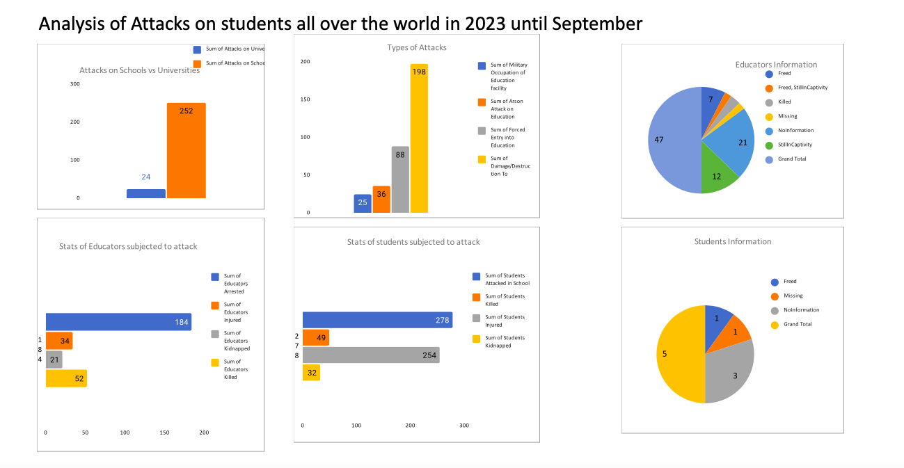

Project Details
2023 Educational Attacks
Introduction
Arson attacks on educational institutions are a rising security threat, undermining access to safe schooling worldwide. This analysis aims to uncover patterns around these attacks to inform policies protecting students and faculty. By examining dimensions like timing, location, precision, and casualties, we can derive actionable insights for security decision makers seeking to safeguard schools.
Data Overview 📈
This analysis compiles detailed incident reports on arson attacks against universities, schools, and other educational facilities globally. The assembled dataset spans dimensions including dates, geographic coordinates, target profiles, attack methods, resulting casualties, and the precision of location information. Bringing these disparate details together enables a multifaceted analysis of the circumstances around educational institution arson.

Analysis Approach
Insights are derived by studying trends over time, geographic concentrations of attacks, correlations between attack details, and outlier events meriting further investigation. This facilitates a data-driven understanding of how, where and why these arsons occur.
Key Insights
Analysis revealed noticeable spikes in arson attacks around major exam periods, indicating student stress and poor test performance could be significant motivational factors. A large discrepancy exists between rates of attacks in rural versus urban educational institutions - rural schools are more frequent targets but urban attacks result in substantially higher casualties when they do occur. Variations in attack planning and methodology were also identified between rural and urban areas, with rural attacks appearing more impulsive while a large percentage of urban incidents reveal signs of premeditation.
Recommendations
To combat rising arson against rural schools, a two-pronged approach is recommended focused on community engagement programs demonstrating non-violent alternatives for students as well as decentralized detection resources in critically vulnerable districts. Urban attack severity warrants centrally monitored CCTV and automated response systems while higher student counseling resources may mitigate exam-related triggers.